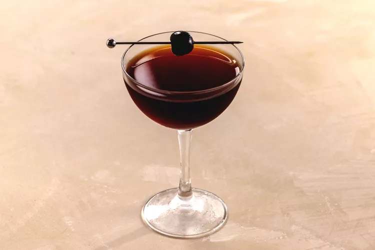

9. Black Manhattan
ABittersweet amaro is the secret to this modern classic Manhattan riff.

Use bittersweet amaro rather than sweet vermouth to make this dark and modern riff on a classic Manhattan.
Ingredients
2 ounces rye whiskey
1 ounce Averna amaro
1 dash Angostura bitters
1 dash orange bitters
Brandied cherry
How to prepare
Step 1
- Add the rye whiskey, Averna, Angostura bitters and orange bitters into a mixing glass with ice and stir until well-chilled.
Step 2
- Strain into a chilled coupe glass.
Step 3
- Garnish with a brandied cherry.
Helpful Tips
- Chill Your Glass
- The use of port-finished Scotch contributes to the cocktail's bold and smooth flavor profile.
- Choose Your Spirit Wisely
- Rye Whiskey
- For a spicier and bolder cocktail, choose a rye whiskey, ideally one that is at least 100 proof to stand up to the other ingredients.
- Bourbon
- If you prefer a slightly sweeter, mellower drink, bourbon is a great alternative to rye.
- Stir, Don't Shake:
- Stirring your Black Manhattan with ice is crucial for achieving the right balance of chilling and dilution, which can take about 30 seconds.
- Don't Over-Stir
- Stirring for too long can over-dilute your drink, so aim for about 30 seconds or until the mixture is well-chilled.
- Garnish to Complement
- A classic maraschino cherry is a perfect garnish, but an orange or lemon twist can add a bright citrus aroma to complement the amaro and bitters.
- Quality Amaro
- Averna Amaro is the signature amaro for the Black Manhattan, but other dark, herbal amari can also be used for a different flavor profile.
- Add Bitters
- Don't forget the bitters! Angostura aromatic bitters and orange bitters add depth and complexity to the cocktail.
Enjoy your Black Manhattan!